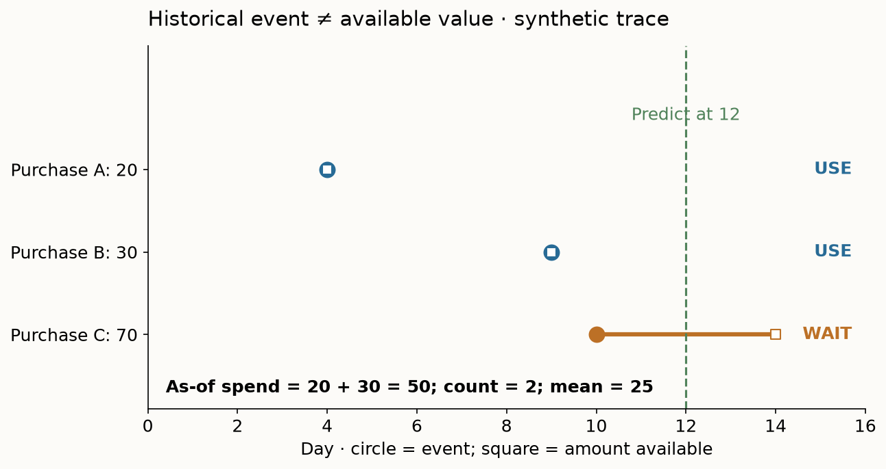
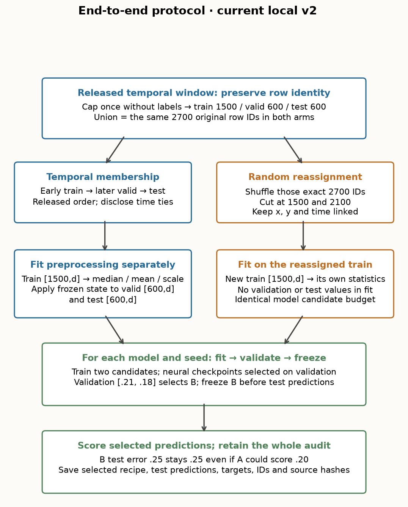
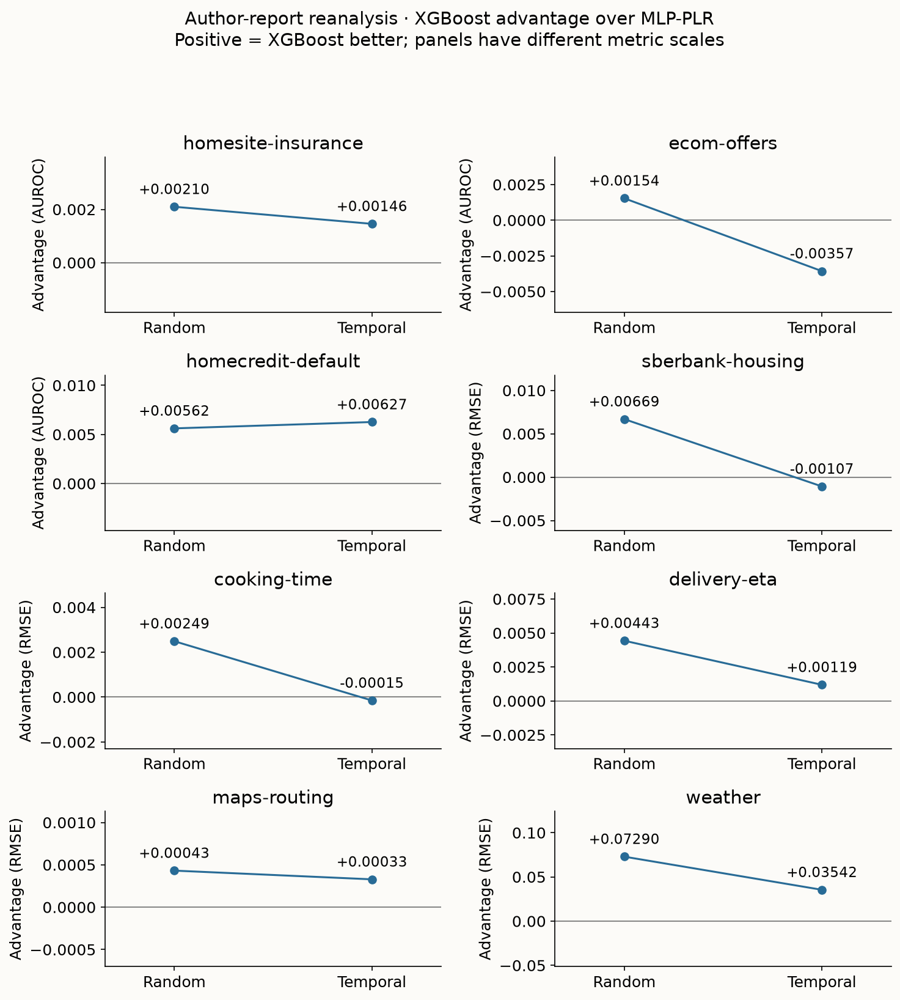

Year 2 · Quarter 2 · Lesson 055
The temporal-split reality
The split is part of the claim.
L054 gave you a parameter-efficient ensemble. Now test the evaluation procedure that decides whether it is useful. Your tangible win: implement a timestamp-safe partition, audit a released benchmark split, and compare three existing baselines under random and temporal evaluation without manufacturing a ranking reversal.
For the relational mission, a future RDL gain must survive the same prediction-time information boundary as its flat-table baseline. A graph does not repair an evaluation that knows tomorrow. This lesson introduces an evaluation protocol, not a new architecture.
Primary reading: Rubachev et al., TabReD: Analyzing Pitfalls and Filling the Gaps in Tabular Deep Learning Benchmarks, §5.4 and Figure 2 (ICLR 2025); then §4 and Appendix C.2. Read §3–5 and Appendices A–C for the complete argument; this lesson works through the method, author evidence and current lab in separate steps.
Recall before reading
Cold L054 bridge — answer before opening
What does TabM average at inference? Why can correlated members limit that gain? What did three model seeds on one fixed split leave unmeasured? Answer: probabilities for classification, raw outputs for regression; shared errors survive averaging; new splits and future periods were not sampled.
1. Two tests, two questions
An evaluation target (also called an estimand) is the quantity your experiment is intended to estimate. A random split distributes rows from the observed period among training, validation and test. A temporal split assigns earlier rows to training and later rows to evaluation. Neither word alone proves validity: validity comes from matching the intended deployment.
Let x be the features available for a prediction, y its eventual outcome, f a fitted model, and ℓ(y,f(x)) its prediction loss. If Pmix is the mixture of periods in the collected data and Pfuture is the later deployment population, the two targets are:
R_mix = E_(x,y)~P_mix [ loss(y, f_mix(x)) ] R_future = E_(x,y)~P_future [ loss(y, f_past(x)) ]
The expectation E means an average over possible examples. The subscript on f matters too: both the training population and the test population change. Their measured difference is therefore a protocol gap, not an isolated causal effect of distribution shift. Here temporal shift means that the distribution of inputs, outcomes, or their relationship changes with time.
Example: random insurance rows from January–December test interpolation within that year's mixture. Training through September and testing November–December asks about later business. If the future is the target, shuffled folds can give an overly favorable estimate; they need not do so on every dataset. A lower future error can also occur when the later period is easier.
A split encodes where the predictor will be used¶
Random splitting asks how well a model predicts another row from approximately the same sampled mixture. Temporal splitting asks how well a model trained on earlier information predicts later rows. The difference is not merely that the second test is harder. It changes the relationship between the training population and the evaluation population.
Imagine a table covering two years in which a product policy changes halfway through. A random split places examples from both policies in training and test. A model can learn both regimes, possibly using a date or proxy feature to distinguish them. A forward split trained only before the change must extrapolate into the new policy. Both tests can be correctly implemented while answering different operational questions.
Temporal order is necessary for a forecasting claim, but it is not sufficient for a realistic deployment simulation. Repeated entities, delayed labels, retrospectively updated features and the intended retraining cadence still matter. A random split can leak entity-specific history across partitions; a time split can also leak future information through a feature that was reconstructed incorrectly.
Do not define realism by a preferred model ranking. If trees win randomly and a neural model wins temporally, inspect the protocol and effect sizes before attaching a story about adaptation. The ranking change may reflect sample size, class prevalence, feature availability or tuning behavior as well as drift.
The useful report contains two named estimands and two result panels. Averaging their ranks into a single winner hides the decision you need to make: interpolate within the observed mixture, or predict after the historical cutoff.
2. Feature-rich tables change the question too
TabReD's contribution has two parts: preserving time and bringing substantial feature engineering into the benchmark. Feature engineering transforms raw records into quantities available to a predictor: counts, recency, historical averages and cross-table summaries. A stronger flat-table baseline may already encode information that a graph model would otherwise have to discover. Paper §4 and Appendix B describe eight tasks spanning insurance, offers, credit, housing, cooking, delivery, routing and weather.
Consider offer redemption. A customer row may contain “spend over the preceding two months,” built from many transactions. The table is already the output of a relational computation. Compare an RDL model against that engineered table under the same historical cutoff; comparing it only against customer demographics would entangle architecture with missing baseline information.

Feature richness also means correlated and irrelevant coordinates can coexist. A 7-day spend feature and a 30-day spend feature overlap; duplicating coordinates changes Euclidean distance unless a learned metric compensates. Appendix A.2 examines correlations and individual feature–target mutual information. Mutual information measures statistical dependence, including nonlinear dependence; a weak individual association does not imply a useless interaction. These plots characterize datasets. They do not isolate why a model fails.
Derive the feature before comparing the model¶
Suppose a customer has purchases of 20 on day 4, 30 on day 9, and 70 on day 10. Their amounts become available on days 4, 9, and 14 respectively. At a day-12 prediction, an event-time filter alone returns 120. A point-in-time feature returns 50, because the third amount has not arrived. The eligible count is 2 and the average is 25. These are three engineered columns produced from the same related records. In the notebook, change the third arrival from 14 to 11 and predict which values change before running the check. This is a synthetic availability example, not a measured defect in TabReD.
Write the sum as Σ_j amount_j × 1[customer_j = customer_i] × 1[event_j < τ_i] × 1[arrival_j ≤ τ_i]. The indicator 1[condition] is one when its condition holds and zero otherwise. The query time τ_i belongs to each prediction row, so a dataset-wide maximum cutoff cannot replace it. For a label-derived aggregate, substitute the label's availability time rather than the purchase amount's arrival. We assume arrivals at τ are processed before prediction; another operational convention would need a strict inequality.
A graph message-passing operator could aggregate the same eligible purchases without explicitly naming “spend.” That changes how the representation is learned, but it does not change which observations are legal. To argue that relational learning adds value, first compare against the legal engineered sums, counts and recency features. TabReD is relevant precisely because its flat rows often already reflect substantial feature work.
Why more columns are not more independent information¶
Take two standardized records with feature differences [1, 2]. Squared Euclidean distance is 1² + 2² = 5. Duplicate the second feature and the distance becomes 1² + 2² + 2² = 9, despite adding no information. A distance-based retrieval method can learn to downweight redundant coordinates, but redundancy creates a representation problem it must solve. A tree can choose either duplicate in a split; training and feature-sampling behavior may still change. An MLP can redistribute coefficients across correlated inputs. None of these observations alone predicts the winning model.
The paper's feature-correlation and mutual-information plots in Appendix A.2 motivate this distinction. Pairwise correlation detects linear association; mutual information can detect nonlinear association between one feature and the target. Neither establishes the value of all feature interactions. Keep feature complexity and time shift as separate candidate explanations, then design interventions to distinguish them.
3. Trace the rows before fitting anything
Use one fixed row pool, two partition rules, the same partition sizes, the same model candidates and the same measurement. That controls several avoidable differences. It still changes which examples a model learns from and predicts.

For timestamp tᵢ, validation boundary a, and test boundary b, use three disjoint, exhaustive conditions:
train: tᵢ < a validation: a ≤ tᵢ < b test: b ≤ tᵢ
All rows with the same timestamp stay together. This can sacrifice exact row-count ratios. In the lab you implement this rule from scratch and check unsorted input plus tied timestamps. Sorting then slicing by row count can divide one timestamp across two partitions.
Released-split audit: our downloaded TabReD random-0 and sliding-window-0 partitions have identical underlying row pools and corresponding sizes. Each of the three temporal partitions shares a boundary timestamp with its neighbor. We retain the supplied indices for the benchmark comparison, disclose that they satisfy nondecreasing rather than strictly separated times, and contrast them with your stricter splitter. The numeric clock's absolute units are unnecessary for that ordering check.
Make cutoffs a rule over records, not a picture¶
Suppose the declared windows are training before day 60, validation from day 60 through day 79, and test from day 80 onward. A row exactly at day 60 belongs to validation under this half-open convention. If one function uses ≤60 for training while another uses ≥60 for validation, that boundary row appears twice. The plot can look reasonable while the partitions overlap.
Store row IDs for each partition and assert disjointness directly. Sort order alone is not identity: filtering, joins and resetting an index can change positional indices. Preserve a stable original identifier so prediction rows can be joined back to the correct outcomes.
Tied timestamps require care. Splitting a tie group by position may send events with the same recorded time into different windows. This may be acceptable under a declared convention, but it does not establish a strict before/after relationship within the group. Use the temporal resolution your data actually supports.
An expanding-window evaluation trains on all eligible past rows and moves the evaluation window forward. A rolling-window evaluation retains only a recent history. Expanding windows preserve more data; rolling windows may reduce stale information. Neither is an architectural property. The window policy belongs to the training procedure and must be held fixed in model comparisons.
If a label summarizes the next 30 days, a row dated just before the training cutoff may have an outcome window extending beyond it. A purge or eligibility filter may be needed to enforce the intended information boundary. The appropriate gap depends on the target definition and availability, not on a universal number of days.
4. An event timestamp is only one clock
A prediction has at least three relevant times: when the event occurs, when each feature becomes available, and when its label arrives. A loan made on Monday can default months later. A model fitted Tuesday cannot train on that Monday loan's eventual default label, even though the event is in the past. Likewise, a transaction's eventual settlement status is not a feature available at authorization.
Our worked example fits weights at time 8 and selects a candidate at time 11. Training events are 1–7, validation events 8–10. With label delay 3, event 6's label arrives at 9, too late for weight fitting. Only validation event 8's label arrives by the selection deadline 11. Availability exactly at a deadline is allowed in this illustration. Test labels are read later for scoring.
Predict: how many labels become usable if delay falls from 3 to 1? Move the slider, then trace event 6 in the table. Event partitions stay fixed; the available information changes.

This is a synthetic availability audit, not an accusation about these datasets. The released arrays expose event metadata but do not establish per-feature availability or label delay. Our experiment assumes their released features and labels are suitable for the benchmark. For a deployment claim, obtain that provenance separately. A temporal gap may help accommodate delays, but its size must follow the actual information horizon.
Event time and availability time answer different questions¶
Let t_event be when the underlying event happened and t_available be when a particular value became usable. At prediction time τ, the event may be in the past while its final outcome remains unknown. A point-in-time query must respect availability, not merely event order.
For example, a purchase occurs on day 10, a refund is requested on day 17 and the final status is recorded on day 20. Predicting on day 12 may use the purchase amount as it was known then. It cannot use the final refund flag simply because that flag is now stored on the row dated day 10.
Aggregations inherit the same requirement. “Customer's prior refund rate” must be computed from outcomes available by the prediction cutoff. Filtering purchases by event date and then aggregating their current final statuses can leak future outcomes through an apparently historical feature.
There can be more than two clocks: ingestion time, correction time and feature-materialization time can differ. Begin with the minimal event/availability distinction, then record additional clocks when they change what the system could know. A feature lineage table is often more useful than an elaborate model diagram for this audit.
In the lab, explain at least one feature in words as an as-of query: “For this entity, using records and labels available by τ, compute this aggregate.” If you cannot write that sentence unambiguously, you cannot yet defend the feature's historical legality.
5. Validation is inside the time boundary
Training fits weights and preprocessing. Validation chooses a candidate and a neural checkpoint (the stored weights after a training epoch). Test measures the already-selected procedure. Future validation labels can leak into the chosen model even when its gradient updates use only historical training rows.
Fit median imputation on training rows, replace missing values using those medians, then fit mean and standard deviation on the filled training matrix. Apply these frozen statistics to validation and test. If a training column is entirely missing, use zero; if its standard deviation is zero, use one as its scale. These conventions make the operation defined without consulting later rows. Regression targets are standardized using training statistics inside the neural trainer, then predictions are restored to the released target scale.

To study whether a validation protocol selects useful models, keep the final future test fixed and vary only how historical training/validation rows are assigned. That answers a narrower question than swapping both train and test populations. The planned, unpublished L055b is intended to develop the validation-protocol thread further.
Validation simulates a decision made before the final period¶
A temporal validation block should come after training and before the untouched test block. Hyperparameters and stopping decisions use that validation period. This simulates a practitioner learning from a recent historical deployment interval before committing to the next one.
Suppose model A is selected because it did well on the final test month, then you report that same month as evidence for A. The chronological split has not prevented selection leakage. Time ordering governs data availability; independence of final evaluation also requires controlling which outcomes guide decisions.
Refitting after selection needs an explicit policy. You may choose a recipe on training/validation and then fit it on their combined eligible history before testing. That increases available data, but it changes the fitted predictor. Both families should receive the declared refit treatment, and preprocessing must be refitted only on the newly legal training pool.
A later performance drop does not identify its cause. Compare feature distributions, target prevalence, calibration and conditional errors. A change in P(X) is covariate shift; a change in P(Y|X) is a conditional mechanism change. Observed drift diagnostics can suggest hypotheses, but finite-sample changes and hidden variables complicate causal attribution.
Design the next intervention around a falsifiable explanation¶
If you suspect old data is harmful, compare rolling and expanding histories at matched evaluation cutoffs. If you suspect calibration drift, fit a calibrator using only a preceding eligible period and evaluate later. If you suspect a feature became unavailable, reconstruct that feature as of time and rerun the same rows. Each experiment targets a different explanation.
The checkpoint is complete when you can defend the row boundary, feature boundary, selection boundary and interpretation. A smaller score with legal information is more useful for deployment planning than an impressive number whose historical inputs cannot be reconstructed.
6. End-to-end evaluation protocol
Trace a row and a decision through the whole computation before reading scores. This lesson introduces no new model: its central object is the procedure that constructs, selects and evaluates existing predictors.

The original local notebook capped the released random and temporal partitions independently. Equal counts did not preserve the same capped pool. The corrected operator first samples the released temporal partitions, concatenates those IDs, and makes a random permutation of that exact pool. This removes the extra pool mismatch while preserving the paper's partition intervention. The random assignment is a new capped analogue of the released random split, not the original random-0 array. The shuffle seed is fixed before results.
A training matrix has shape [1500, d], where d is 119, 276 or 382 numeric/binary columns for Ecom, Homesite and Sberbank. Train-only preprocessing produces three matrices with the same d columns; labels enter fitting and validation scoring. The selected model produces [600] test probabilities or regression values. Metadata timestamps and row IDs audit access; they do not become predictor inputs.
The live paired_random_split, fit_preprocessor and select_candidate functions run inside the actual experiment. A separate strict chronological_split exercise shows a whole-timestamp alternative; it does not silently replace official count-based windows.
7. Read the paper as three linked experiments
Benchmark construction (§3–4): audit prior datasets, then select eight traceable, feature-rich tasks with time information. The benchmark complements existing collections; it is biased toward industrial applications and does not cover medicine, science or social data. Anonymous feature semantics also limit methods relying on descriptive column names. “Industrial” is a scope, not a guarantee that every deployment is represented.
Technique transfer (§5.1–5.3, Table 3, Figure 1): compare established architectures, numerical embeddings, ensembling, retrieval and training recipes. An MLP learns a row-wise nonlinear function. MLP-PLR first expands each scalar through periodic functions and a learned transformation, changing the representation before ordinary dense blocks. XGBoost builds additive decision trees. TabR-S retrieves training examples and their labels using a learned similarity. The Figure 2 legend abbreviates this as TabR; §5.4 names the simplified TabR-S variant. These are distinct routes to prediction; the split study compares all four. Our newly trained continuity baseline is corrected TabM-mini, an ensemble mechanism from L054, and is not a Figure 2 arm.
Split intervention (§5.4, Figure 2): move a fixed-size temporal window through each dataset three times; for each window shuffle its same row pool while retaining train/validation/test counts. Tune and evaluate MLP, MLP-PLR, XGBoost and TabR-S, with 15 initialization seeds. Compare absolute scores, spreads and relative margins. The intervention changes the information used for training and the test distribution. It estimates protocol sensitivity, not a controlled causal effect of drift alone. Primary split-study source.
In the main comparison, strong GBDTs and numerical embeddings transfer well on average; retrieval and longer augmentation-based recipes transfer unevenly. The paper proposes feature complexity and temporal mismatch as hypotheses. For TabR, old labels may be less useful for future queries; for feature-shuffle augmentations, correlated aggregates may be corrupted into implausible combinations. Neither explanation was isolated by a matched intervention. TabM can reduce member-specific error; averaging cannot manufacture future labels or restore an obsolete relationship. FT-Transformer's feature attention can learn interactions, but its pairwise attention matrix grows with the square of feature count. A richer table therefore changes both useful information and computation. §5.2–5.3.
Appendix A.1 examines time-binned errors and disagreement among MLP ensemble predictions. Disagreement is a proxy, not a calibrated detector of distribution shift: members can agree and all be wrong. Appendix A.3's temporal-domain CORAL and later-history last-layer retraining do not provide a universal repair. Distinguish these auxiliary studies from the Figure 2 experiment you reanalyze below.
Read the recipe as carefully as the architecture¶
Appendix C.2 describes 100 tuning trials for most models and 25 for FT-Transformer. The pinned temporal-study XGBoost tuning files specify 200 trials and up to 4000 trees. That difference is why a single sentence saying “equal tuning budgets” would misdescribe the source. Each dataset/model/split configuration is the recipe to inspect. The released report stores the selected model settings, optimizer, preprocessing policy, split name and initialization seed; our source inventory points to representative configs and their hashes.
For these three public tasks the neural code uses a normal-output quantile transform. It fits on training values perturbed by small Gaussian noise of standard deviation 10⁻⁵, then transforms the unperturbed partitions; NaNs become zero after transformation. Quantile transformation maps empirical percentiles toward normal scores. The small fit-time noise helps distinguish tied training values. This is different from our local median imputation followed by standard scaling. Other paper datasets use already normalized numerical values and an identity policy, so “the paper always applies quantiles” is also wrong. Categorical handling has its own training vocabulary and unknown-category rule; omitting 23 or 10 columns is a substantive feature change.
The paper's main Table 3 ranks are also different from ordinary point-estimate ranks. The official get_ranks_ours sorts means and groups a following model with the current group's leader when its score gap is within that leader's sample standard deviation. Its reference does not update for a model that remains in the same group. This is a descriptive tiering rule, not a confidence-interval test. Appendix C.2 additionally reports Tamhane's T2 multiple comparisons. Our live rank exercise uses ordinary average ranks on dataset-level means; we do not present it as a recreation of either paper procedure.
Compare scalar embeddings, retrieval and ensembles under one cutoff¶
MLP-PLR alters the encoding of each numerical input before row-wise prediction. TabR-S additionally consults labeled training rows at prediction time. TabM-mini shares dense weights across members, uses one initial member adapter and independent small output heads, and averages predictions. These mechanisms have different failure modes: a useful scalar representation may transfer even when a retrieved neighbor's old outcome is no longer informative, while averaging correlated members may preserve shared temporal bias.
A useful follow-up would keep future queries fixed and restrict retrieval memory to equally sized recent versus older eligible histories. It would not compare an unrestricted memory with a smaller restricted one and attribute the entire difference to age. Likewise, comparing MLP with MLP-PLR under one protocol isolates a representation change more closely than comparing today's default MLP with yesterday's tuned tree benchmark. The paper provides evidence about transfer of techniques; the causal diagnosis remains a research question.
8. Reanalyze the authors' original temporal-study reports
The pinned official repository contains per-seed metrics and configurations from the paper experiment. Our extraction reads only paper/exp/temporal-shift-analysis/*/*/evaluation/*/report.json: it excludes tuning results, ensemble results and the main default-split table. It validates each path against the stored dataset, split and seed, hashes the original bytes, and preserves the metric direction. Pinned author reports.
Predict before revealing: does the XGBoost advantage over MLP-PLR shrink on every dataset? Could its absolute future score worsen while its relative advantage grows?
Reveal the author-report reanalysis
On narrow screens, scroll horizontally to inspect the complete table.
| Task | Units | Random advantage | Temporal advantage | Change |
|---|---|---|---|---|
| homesite-insurance | AUROC | +0.002098 | +0.001457 | -0.000641 |
| ecom-offers | AUROC | +0.001537 | -0.003569 | -0.005107 |
| homecredit-default | AUROC | +0.005617 | +0.006265 | +0.000648 |
| sberbank-housing | RMSE | +0.006691 | -0.001070 | -0.007761 |
| cooking-time | RMSE | +0.002490 | -0.000151 | -0.002641 |
| delivery-eta | RMSE | +0.004432 | +0.001189 | -0.003243 |
| maps-routing | RMSE | +0.000432 | +0.000329 | -0.000103 |
| weather | RMSE | +0.072896 | +0.035421 | -0.037474 |

There are 2879 of 2880 expected reports (8 tasks × 4 models × 2 protocols × 3 windows × 15 seeds). XGBoost / Cooking Time / random window 0 / seed 1 is missing. We average available seeds within each window, then give the three window means equal weight; that cell uses 14 seeds. A second analysis drops seed 1 from every arm and protocol of Cooking window 0 to compare matched seed sets. Neither analysis invents a missing observation. The downloadable JSON contains both.
Define an oriented XGBoost advantage over comparator B: A = AUROC_XGB − AUROC_B for classification, or A = RMSE_B − RMSE_XGB for regression. A positive value always favors XGBoost. Its temporal change is A_time − A_random; a negative change means its advantage shrinks. This subtraction is within a task and metric. Do not average a log-RMSE margin with an AUROC margin as though the units matched.
For Ecom, the reanalyzed advantage over MLP-PLR goes from +0.001537 to −0.003569 AUROC: a change of −0.005106. For Homecredit it grows from +0.005617 to +0.006265. Thus the narrowed-lead pattern is widespread in these logs, with an explicit exception. Tiny margins need their window/seed context. The lab lets you inspect all four arms and each window instead of treating one aggregate as a universal architecture verdict.
Evidence status: AUTHOR_REPORT_REANALYSIS. This executes aggregation of original reported measurements. It does not independently retrain their models, establish original row/feature identity, audit feature arrival timestamps or exactly regenerate the original plotting program. Fresh paper training remains NOT_RUN. Report values, source hashes and summaries.
Windows, seeds and metrics answer different uncertainty questions¶
Let e_(d,m,p,w,s) be an error for dataset d, model m, protocol p, window w and seed s. First compute the mean across available seeds for each fixed window. Then average the three window means to summarize that dataset/model/protocol. In the complete cells there are 15 seeds per window, so this equals a flat mean over 45 numbers. With a missing seed it does not: equal window weight keeps the intended three-period summary from shifting toward windows with more reports.
For a small illustration, window errors are [0.10], [0.30, 0.40], [0.50, 0.60]. The window means are 0.10, 0.35 and 0.55; their equal-weight mean is 1.00/3 ≈ 0.3333. Pooling all five errors instead gives 1.90/5 = 0.38. Neither repairs the missing first-window observation. The lab computes a matched-seed sensitivity as a separate analysis and displays the actual counts.
A training-seed SD describes variation from initialization, minibatch order and stochastic training within a fixed protocol. The range of window means describes variation across these three historical windows. They overlap: the same event may enter different roles as the windows move. Consequently, 45 runs are not 45 independent future deployments, and three windows do not become independent merely because they have different IDs. Report within-window variability and between-window variation separately. A claim about unseen periods requires a design with a defensible temporal sampling unit.
For cross-task summaries, raw RMSE values from different targets cannot be pooled with AUROC. Convert each task's seed/window mean errors to within-task ranks if relative placement is the desired quantity, then average ranks over datasets. This discards effect-size information, so keep task-level metrics alongside ranks. Eight tasks with three windows each are still eight task units for a dataset-level comparison, not 24 independent benchmark datasets.
A lower future error can coexist with harmful shift¶
Consider a hypothetical old-period regression population with irreducible noise SD 0.30 and a later population with noise SD 0.10. A stale predictor can gain 0.05 of extra error from a changed conditional relationship and still score lower in the later period because the observations are less noisy. A random/time error difference combines model mismatch and population difficulty. Appendix A.1 discusses this issue; an increasing ensemble-disagreement curve is only suggestive evidence. The appropriate counterfactual would compare predictors on the same later population under declared information access, which the random-versus-time comparison alone does not supply.
For Sberbank's released target, y = log(price / floor area). A residual of log(1.10) ≈ 0.0953 corresponds to a predicted per-area price 10% too high for that row. For small relative error ε, log(1+ε) ≈ ε, so squared log error is locally like squared relative error. RMSE on these logs is neither currency RMSE nor MAE in original units, and exponentiating an average log error does not recover an average currency error.
9. Train the current small comparison, then accept its answer
Held fixed: three released task pools, matching partition counts, label-blind row caps, feature policy, two candidates per arm and three training seeds. Varied: a label-blind random reassignment of the capped temporal pool versus its original temporal membership, including validation assignment. Measured: 1−AUROC for classification and RMSE for regression, so lower is better throughout. AUROC is the probability that a positive example receives a larger score than a negative example, counting ties by half. AUROC requires both positive and negative examples in the evaluated partition; if a tiny cap removes a class, report that failure and revise the declared sampling design rather than searching favorable seeds. RMSE is √mean((prediction−target)²), in target units. Sberbank's released target is log(price / floor area), as defined in the pinned preprocessing code; its RMSE is not a currency error.
We use Ecom Offers, Homesite Insurance and Sberbank Housing from the July 2026 public release, verified against the pinned official registry. Do not infer changed data content merely from different totals in the paper's summary Table 2. We compared current class counts with pinned original MLP reports: all 21 Homesite default/random/temporal partition counts match, and Ecom's three default partitions match. Ecom's 18 random/temporal partitions have matching total sizes but different class counts. For example, temporal-0 test currently has [13802 negative, 6198 positive] versus [13796, 6204] in the original report. Thus some alignment is positively supported, while Ecom membership/label alignment is unresolved. Matching counts alone still cannot prove original row IDs or feature-byte identity. Inspect all 42 alignment checks.
Caps are 1500 training / 600 validation / 600 test rows per protocol; sampling seeds 550/551/552 are independent of labels and model seeds 0/1/2. Numeric and binary columns are kept; 23 Homesite and 10 Sberbank categorical columns are omitted. MLP and TabM-mini use two width-64 blocks, 32 epochs, AdamW, and candidate learning rates .001/.003; TabM has k=8. XGBoost uses 120 trees with candidate depths 3/6. Candidate budgets match in count, not compute or search-space coverage. Median/standard scaling differs from the paper's train-fitted noisy quantile preprocessing for these tasks. Five other tasks, larger searches, full features and repeated temporal windows are omitted from this local run.
Reveal measured local evidence
On narrow screens, scroll horizontally to inspect the complete table.
| Task | Split | MLP | TabM-mini | XGBoost |
|---|---|---|---|---|
| ecom-offers | random | 0.32818 ± 0.00464 | 0.32086 ± 0.00280 | 0.34572 ± 0.00492 |
| ecom-offers | temporal | 0.44790 ± 0.01876 | 0.43264 ± 0.01097 | 0.39096 ± 0.00933 |
| homesite-insurance | random | 0.13292 ± 0.00061 | 0.11439 ± 0.00412 | 0.07889 ± 0.00095 |
| homesite-insurance | temporal | 0.14792 ± 0.00471 | 0.10683 ± 0.00605 | 0.08231 ± 0.00173 |
| sberbank-housing | random | 0.31048 ± 0.00280 | 0.30468 ± 0.00163 | 0.29989 ± 0.00127 |
| sberbank-housing | temporal | 0.27396 ± 0.00813 | 0.27532 ± 0.00339 | 0.27690 ± 0.00303 |
Our corrected local measurements: mean ± sample SD over three seeds on one fixed capped split pair. Ecom changes from TabM-mini to XGBoost as the point-estimate winner; Homesite retains XGBoost; Sberbank changes from XGBoost to MLP. These small selected experiments do not establish stable population rankings.
All three Sberbank mean errors are lower temporally; all three Ecom mean errors are higher. This illustrates why time need not always increase error. Both model fitting and test populations change. These are current v2 results; historical scores retain their original operator and are not relabeled as corrected runs.
Mean ranks in MLP / TabM-mini / XGBoost order: random 2.667 / 1.667 / 1.667; temporal 2.333 / 2.000 / 1.667. Friedman p values 0.3679 / 0.7165; CD = 1.9136. Only three dataset units: exploratory, low-power comparisons. INCOMPARABLE to fresh paper training.


For three seed errors e₁,e₂,e₃, report their mean and sample standard deviation s. The plotted interval is mean ± 4.303·s/√3 (Student-t with two degrees of freedom). It conditions on fixed rows and protocol; it does not include future-period uncertainty. Random and temporal test rows differ, so paired seed numbers are not paired observations. Do not treat their score difference as a per-example paired test.
Our Friedman test asks about consistent rank differences across the three datasets, separately for each protocol. Nemenyi's critical difference marks a pairwise rank separation threshold. These are exploratory summaries, not the paper's statistical procedure or a powered robustness claim. The reproduction contract records the scope; raw scores, predictions and selection traces are in the evidence JSON.
10. Diagnose a gap without inventing its cause
A changed winner answers “does this ranking transfer across these protocols?” It does not answer why. Begin with a hypothesis and an intervention whose outcome could refute it.
| Hypothesis | Keep fixed | Change and measure |
|---|---|---|
| Old history is less useful | Future test, legal features, training count, tuning budget | Sample equal-sized older versus recent histories; compare test error and calibration. |
| Validation selects for the wrong period | Final future test and candidate recipes | Historical shuffled versus recent validation; measure selected-candidate regret. |
| Retrieval uses stale labels | Query rows, encoder, candidate count | Eligible historical memory age; compare neighbor ages, predictions and error. |
| Retrospective features leaked | Rows and model recipe | Current snapshot versus reconstructed as-of values; count changed features and score differences. |
Calibration asks whether predictions of probability p occur about p of the time. AUROC can stay similar while a probability model becomes overconfident; ranking and calibrated probability are different deployment properties. A repeated entity is likewise not automatically a leak: future predictions for existing customers may legitimately use their past history. An unseen-customer claim needs a group holdout, possibly combined with a temporal cutoff.
For a graph baseline, an edge inherits time restrictions too. A customer→purchase→refund path can leak even if its starting customer node is old. Build each prediction's permitted neighborhood from events and values available at its cutoff. This is the same rule as the engineered-spend feature, expressed as graph construction. The benchmark compares predictors after feature construction; it does not itself establish that learned relational representations beat engineered ones.
11. Build a defensible result
Student notebook · Prepared lab · Colab (after publication).
Five TODOs implement whole-timestamp splitting, same-pool random reassignment, training-only preprocessing, validation selection and rank changes. CHECK cells exercise ties, unavailable information and deliberately misleading test scores. The fitted models call your random reassignment, preprocessing and selector; the reanalysis uses the actual paper arms and original reports. The corrected L054 MLP/TabM-mini implementation and experiment loop are visible PROVIDED cells, split into readable stages.
EXIT: submit your split audit and one task's three-arm random/time table with seed variability. State whether the winner changes, quantify one margin change, identify one source of unmeasured uncertainty, and separate paper claim, local result and unrun work. Explain why shared boundary timestamps and delayed labels require different checks. A “no reversal” result is a valid answer.
Required next experiment: after the local lab, run the gated closer cell: the same live functions, 6000/2000/2000 caps, three released temporal windows and their derived same-pool random assignments, three seeds, 64 epochs and 300 trees. This still omits categorical columns and original paper arms/searches. A CPU Modal operator is also supplied; it is not necessary to use a GPU for this protocol exercise. Full Figure 2 reproduction remains unrun and needs the original model suite, original row/feature and split reconciliation, preprocessing, tuning and 15 seeds.
Ask me follow-up questions about any partition, failing CHECK or conclusion you cannot defend. Paste your EXIT for review. Next available: L056, TabArena. L055b, temporal shift and validation protocols, is planned and unpublished.